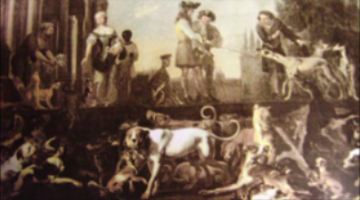

Castle of Presa
HOME OF THE REAL PERRO DE PRESA CANARIO


Castle of Presa
HOME OF THE REAL PERRO DE PRESA CANARIO
The Presa is a Molosser type of dog which originated on the Canary Islands of Tenerife and Gran Canaria in the Canary Archipelago. The Canary Islands were actually named after the dog, not a famous bird. In fact, the word "cane" gave rise to the islands name. These dogs were widely spread on the territory of the Canary Islands before the Spanish settled there. The islands where referred to as "The Islands of the Dogs."
Around the eighteenth century, the English colonists, traders, and merchants brought their Bandogges and Tiedogs to the Canary Islands. Shortly thereafter, the English introduced their favorite breeds of Bull/Terriers, Bulldogs, and Mastiffs, and began crossbreeding with the existent Perro de Presa of the Canary Islands.
The Presa Canario was developed by farmers in the Canary Islands to serve as a guard dog: to guard their homes, farms, livestock, and to subdue the cattle for the butchers. They were later used for dog fights along with other breeds until the 1940s when dog fights were prohibited. Consequently, the Perro de Presa Canario decreased greatly in numbers. Just a few Presa dogs where still used by farmers as guard dogs and to catch as well as hold the cattle. Reconstruction of the breed began in the early 1970's by various aficionados who sought to preserve the heritage of the Presa Canario. Throughout the next decade, breeders began searching for what they believed were the most traditional examples of the Presa Canario in temperament, courage, guard instinct, and other aspects. These breeds may have included the Bullterrier, the American Staffordshire Terrier, the Great Dane, the Neapolitan Mastiff, the Fila Brasileiro, the American Bulldog, the English Bulldog, the Bullmastiff, the Spanish Mastiff, the Doberman, the Dogue de Bordeaux, the Spanish Alano and the Perro de Ganado Majorero. Clearly, the gene pool for the modern Presa Canario is quite extensive and can still produce atypical specimens of this nascent breed.
The first few Presas were imported to U.S. in the late 1980s. Their popularity was on the rise. Dog fanciers were anxious to own and show this rare dog breed. Nevertheless, AKC registers the Presa Canario only under their FSS program which is useless for Presa owners. Fortunately, other American Presa Canario clubs were founded. Now, you can register your Presa with UKC or UPPCC. However, if you live in Europe and want to register your Presa with FCI, you need to change his original name to Dogo Canario. According to FCI standards, your “Dogo” will not be allowed to have a black coat or the traditional white markings on their belly, chest, and feet. Also, cropping their ears is illegal in Europe.
The word “presa” can be translated to “gripper”. The Tenerife Club Espaňol del Dogo Canario (CEDC) did not feel comfortable with the name “gripper” so they changed it to “Dogo” in 2001 to make it politically correct. They concentrated more on the show-look to satisfy their judges than on performance and working abilities. Fédération Cynologique Internationale, also known as the FCI, is an International Kennel Club with 84 member countries which are mainly in Europe and it is based in Belgium. On June 3, 2001, the FCI aided by the CEDC, officially declared and recognized the "Perro de Presa Canario breed" as the "Dogo Canario", eliminating the black coat, traditional markings, and maximum weight limitation. The FCI changed the "unlimited weight" of the Dogo Canario to the original standards of the Presa Canario after almost 15 years (approximately 2015-2016). The change from “Presa” to “Dogo” was an insult to many traditional Presa breeders in the Canary Islands because they felt that Presa dogs have always been a large part of their heritage and always referred to them as Presa. The FCI is getting closer to the acceptance of the Presa Canario. As of December 2018/January 2019, the FCI reverted back to "Presa."
Because, there are still several Canary Islands breeders who do not accept the change, and breed real Presa based on the old Bardino Majorero bloodline (Bardino is an original Canary Island dog, which played a key role in the creation of Presa Canario), with original appearance, original temperament and register their Presa with U.S. clubs such as UPPCC, as Presa Canario. With this change, the CEDC with FCI actually created a new breed called "Dogo Canario" because the Presa Canario still exists with its original standards and is supported by the UKC club. The United Kennel Club (UKC) recognized the Perro de Presa Canario on January 1, 2003 with all traditional marking and black coat.
We, at Castle of Presa, are supportive of the traditional Presa bloodlines with working abilities, original appearance: sporting a black coat, and traditional markings. We breed Presa (not "Dogo") and will only register our dogs with UPPCC.
Even though the Presa has a long and glorious heritage, it is a relatively new breed. Since 2001, many breeders went in different directions with many ignoring the original Presa with traditional appearance and working abilities. They began breeding the Dogo Canario for dog shows. We can still see a significant difference between Presas and Dogos.
The Presa Canario is an extraordinary dog. When properly socialized and trained, there is no better dog than a Presa. Presa Canario can now participate in all UPPCC, AKC and UKC events which include obedience trials, agility trials, weight pulls, and personal protection events. There have already been reports about Presas being titled with PSA, Schutzhund, and French Ring. This clearly proves the Presa’s amazing working ability.
The Presa is a Molosser type of dog which originated on the Canary Islands of Tenerife and Gran Canaria in the Canary Archipelago. The Canary Islands were actually named after the dog, not a famous bird. In fact, the word "cane" gave rise to the islands name. These dogs were widely spread on the territory of the Canary Islands before the Spanish settled there. The islands where referred to as "The Islands of the Dogs."
Around the eighteenth century, the English colonists, traders, and merchants brought their Bandogges and Tiedogs to the Canary Islands. Shortly thereafter, the English introduced their favorite breeds of Bull/Terriers, Bulldogs, and Mastiffs, and began crossbreeding with the existent Perro de Presa of the Canary Islands.
The Presa Canario was developed by farmers in the Canary Islands to serve as a guard dog: to guard their homes, farms, livestock, and to subdue the cattle for the butchers. They were later used for dog fights along with other breeds until the 1940s when dog fights were prohibited. Consequently, the Perro de Presa Canario decreased greatly in numbers. Just a few Presa dogs where still used by farmers as guard dogs and to catch as well as hold the cattle. Reconstruction of the breed began in the early 1970's by various aficionados who sought to preserve the heritage of the Presa Canario. Throughout the next decade, breeders began searching for what they believed were the most traditional examples of the Presa Canario in temperament, courage, guard instinct, and other aspects. These breeds may have included the Bullterrier, the American Staffordshire Terrier, the Great Dane, the Neapolitan Mastiff, the Fila Brasileiro, the American Bulldog, the English Bulldog, the Bullmastiff, the Spanish Mastiff, the Doberman, the Dogue de Bordeaux, the Spanish Alano and the Perro de Ganado Majorero. Clearly, the gene pool for the modern Presa Canario is quite extensive and can still produce atypical specimens of this nascent breed.
The first few Presas were imported to U.S. in the late 1980s. Their popularity was on the rise. Dog fanciers were anxious to own and show this rare dog breed. Nevertheless, AKC registers the Presa Canario only under their FSS program which is useless for Presa owners. Fortunately, other American Presa Canario clubs were founded. Now, you can register your Presa with UKC or UPPCC. However, if you live in Europe and want to register your Presa with FCI, you need to change his original name to Dogo Canario. According to FCI standards, your “Dogo” will not be allowed to have a black coat or the traditional white markings on their belly, chest, and feet. Also, cropping their ears is illegal in Europe.
The word “presa” can be translated to “gripper”. The Tenerife Club Espaňol del Dogo Canario (CEDC) did not feel comfortable with the name “gripper” so they changed it to “Dogo” in 2001 to make it politically correct. They concentrated more on the show-look to satisfy their judges than on performance and working abilities. Fédération Cynologique Internationale, also known as the FCI, is an International Kennel Club with 84 member countries which are mainly in Europe and it is based in Belgium. In 2001 the FCI aided by the CEDC, officially declared and recognized the "Perro de Presa Canario breed" as the "Dogo Canario", eliminating the black coat, traditional markings, and maximum weight limitation. The FCI changed the "unlimited weight" of the Dogo Canario to the original standards of the Presa Canario after almost 15 years (approximately 2015-2016). The change from “Presa” to “Dogo” was an insult to many traditional Presa breeders in the Canary Islands because they felt that Presa dogs have always been a large part of their heritage and always referred to them as Presa. The FCI is getting closer to the acceptance of the Presa Canario. As of December 2018/January 2019, the FCI reverted back to "Presa."
Because, there are still several Canary Islands breeders who do not accept the change, and breed real Presa based on the old Bardino Majorero bloodline (Bardino is an original Canary Island dog, which played a key role in the creation of Presa Canario), with original appearance, original temperament and register their Presa with U.S. clubs such as UPPCC, as Presa Canario. With this change, the CEDC with FCI actually created a new breed called "Dogo Canario". It is obvious, that if two dogs have two different standards they are two different dogs.
We, at Castle of Presa, are supportive of the traditional Presa bloodlines with working abilities, original appearance: sporting a black coat, and traditional markings. We breed Presa (not "Dogo") and will only register our dogs with UPPCC.
Even though the Presa has a long and glorious heritage, it is a relatively new breed. Since 2001, many breeders went in different directions with many ignoring the original Presa with traditional appearance and working abilities. They began breeding the Dogo Canario for dog shows. We can still see a significant difference between Presas and Dogos.
The Presa Canario is an extraordinary dog. When properly socialized and trained, there is no better dog than a Presa. Presa Canario can now participate in all UPPCC, AKC and UKC events which include obedience trials, agility trials, weight pulls, and personal protection events. There have already been reports about Presas being titled with PSA, Schutzhund, and French Ring. This clearly proves the Presa’s amazing working ability.